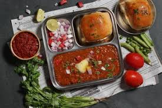
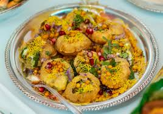

Featured Recipes

Biryani
This recipe provides a classic, layered Chicken Dum Biryani, known for its tender chicken, fragrant spices, and fluffy, long-grain rice.
View Recipe
Paneer Curry
This Paneer Curry is simple but has all those unique & rustic flavous of the food served in dhabas.
View Recipe

Pav Bhaji
This Pav Bhaji Recipe is spicy, so flavorful and can be easily made vegan by replacing butter with vegan butter. If you have never had this in your life, you are seriously missing out!
View Recipe

Pani Puri
It is very simple to assemble and one can easily find puffed puri at any Indian grocery store or prepare at home with this puffed puri recipe.
View Recipe